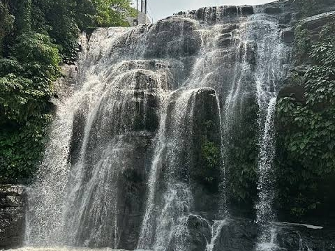
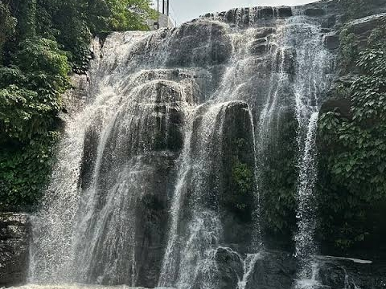

Hinulugang Tak-Tak
üìç View LocationDescription
Hinulugang Taktak doesn't have a specific "built" or "discovered" date, as it's a natural waterfall with a legend of its naming from the 15th or 16th century when a bell was dropped there. It became a designated recreation area in 1952 and was later declared a National Park in 1990 under a specific law. Hinulugang Taktak is a 70-foot waterfall and a designated national park in Antipolo City, Rizal, Philippines. It is a popular natural tourist spot named after the legend of a large bell (taktak) being dropped (hinulog) into it in the 16th century to end a priest's suffering from its unbearable ringing. The park features a scenic waterfall, lush greenery, and is managed by the Department of Environment and Natural Resources and the Rizal Provincial Government. Hinulugang Taktak Protected Landscape, also known as Hinulugan Taktak, is a protected area in Rizal, Philippines. Initially assigned as a recreation area, the waterfall area has been designated as a national park by virtue of Republic Act No. 6964 in 1990. Ten years later, it became a protected landscape under Proclamation No. 412. It is managed by the Department of Environment and Natural Resources and the Rizal Provincial Government. Hinulugang Taktak in Antipolo. This is famous waterfall, the Prime tourist spot of Old Antipolo. Green leaves, smooth ambiance, healthy environment, clean sorroundings, clean flowing water, sweet chirping of the birds, people enjoying the place. Children playing as their mothers rinsed the laundry upstream, different kinds of fish visible in the water so clear that even the colors of fascinating butterflies were reflected on the water. Activities in Hinulugang Taktak include picnicking, walking on nature trails and hanging bridges, swimming in the park's pool, and exploring the area for its lush flora and fauna. Visitors can also enjoy views of the waterfall, with some sites mentioning free entrance for both the park and some activities.During this season, several key factors attract both locals and tourists
Location
Hinulugang Taktak is located at Daang Bakal Rd., Sitio Taktak, Brgy., in Antipolo, Rizal.No Entrance Fee
The entrance to the park itself is free for all visitors.Sign-in Required
You will need to register your name upon entry.Activities and Amenities
Free Activities
Many activities are free, including the canopy trail, spider web, wall climbing, and the swimming pool.Swimming Pool
The public swimming pool is available for use, 30pax for 1h, then another batch next.Picnic Areas
Picnic tables are provided.Adventures and Activities
Canopy Walk
Explore the park's lush surroundings by walking on a hanging bridge.Spider Web Platform
Experience the thrill of lying on a web-like platform suspended over the falls.Wall Climbing
Test your climbing skills on the designated wall.Nature and Leisure Activities
Waterfall Viewing
Take in the scenic views of the park's main waterfall and its surrounding natural beauty.Picnicking
Enjoy a meal amidst nature at the park's picnic areas.Nature Walks
Follow the park's trails to explore the area's diverse plants and animals.Swimming
Take a refreshing dip in the park's swimming pool.Other information
Free Activities
The entrance to the park and some amenities like the swimming pool are free.Operating Hours
The park is open from Tuesday to Sunday, 7:00 AM to 4:00 PM, and is closed on Mondays.Important Notes
Wear rubber shoes for the canopy, wall climbing, and spider web activities. Some activities may have age restrictions, 14 yrs old above only.
Gallery


 
